..cantor.dust..
...
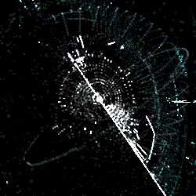
... beginning users quickly learn to differentiate between text, code, audio, visual, and compressed data. advanced users readily identify minutiae hiding in gigabytes of data ...
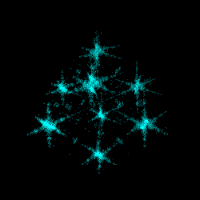
... learning to recognize the pattern associated with a target data type translates this ...
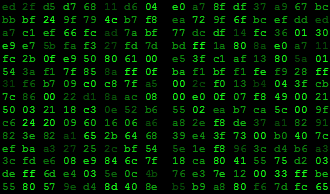
... our minds were designed to process images, not hex ...
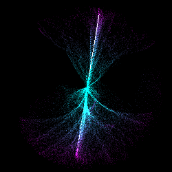
... dynamic - visually 'play' through a binary file to find variations in structure and reveal embedded data ... 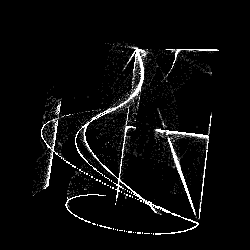
... powerful - 37 unique visualization strategies offer the ability to focus on data type, patterns, variation, distribution, entropy, organization, etc... the reverser chooses the visualization technique targeting the information he/she wishes to extract ...
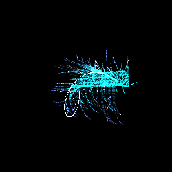
... unicode, followed by a bitmap image ...
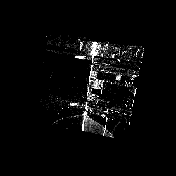
... table of sequential signed integers ...
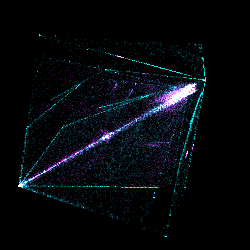
... x86, followed by a .ico file ...
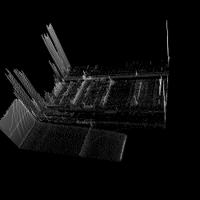
... ad infinitum ...
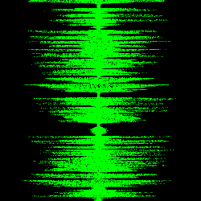
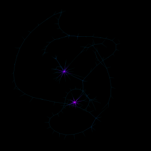
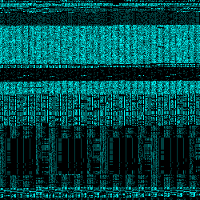
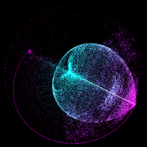
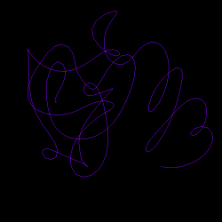
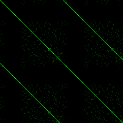
 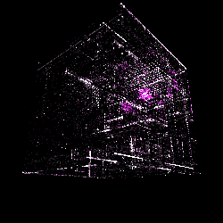
 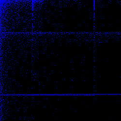
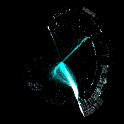
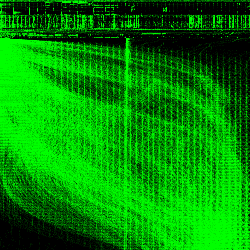
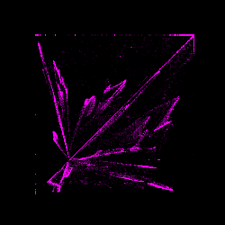
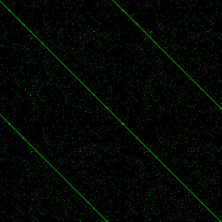
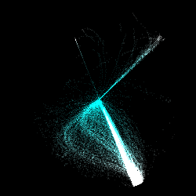
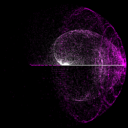
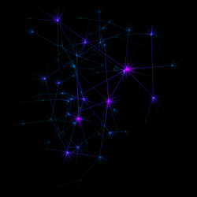
| 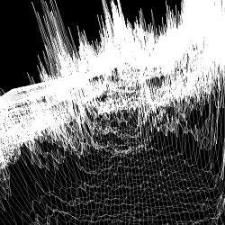
... the visualization methods are designed such that every type of data has it's own unique visual pattern. similar data types share similar patterns, but even slight variations in the underlying data (x86 vs. x64, Spanish vs. Italian text, photos vs. clip art) produce their own unique, easily identifiable patterns ...
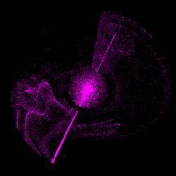
... previously unseen types (unique instruction sets, proprietary data types) are quickly identified and learned based on visual patterns ...
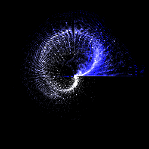
... into this ...
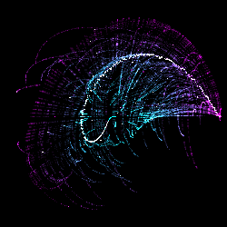
..cantor.dust.. is ... 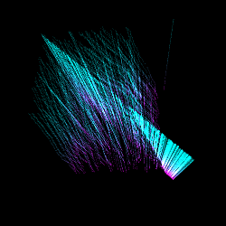
... interactive - the reverser manipulates the visual feedback on the fly to extract the most relevant information ...
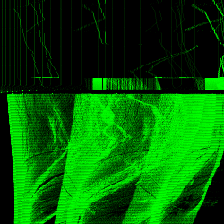
... a compressed image, followed by ascii ...
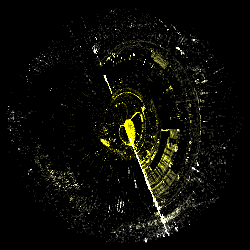
... list of data pointers ...
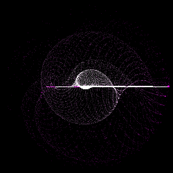
... uncompressed audio ...
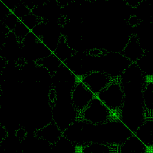
... COFF symbol table ...
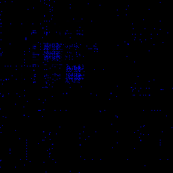
...
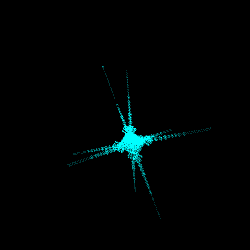
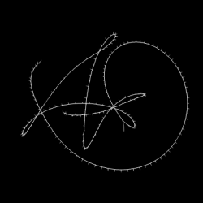
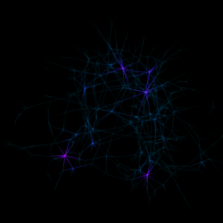
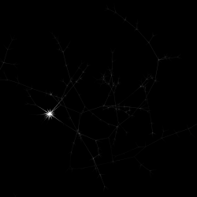
|
{kind=link}
{kind=link}
{kind=link}